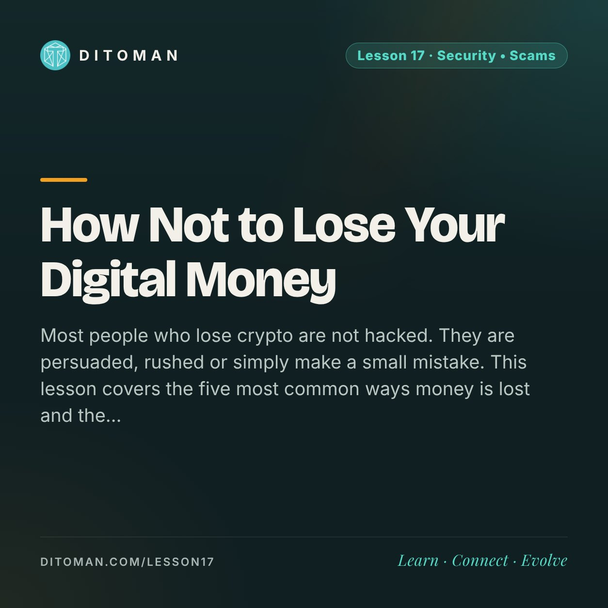

Comment ne pas perdre votre argent numérique
چطور پول دیجیتالمان را از دست ندهیم؟
La plupart des gens qui perdent leurs cryptos ne sont pas piratés. Ils sont persuadés, pressés ou font simplement une petite erreur. Cette leçon couvre les cinq façons les plus courantes de perdre de l'argent et les habitudes simples qui bloquent chacune d'elles.
بیشتر کسانی که کریپتو از دست میدهند هک نمیشوند. قانع میشوند، عجله میکنند یا فقط یک اشتباه کوچک میکنند. این درس پنج راه رایج از دست رفتن پول و عادتهای سادهای را که جلوی هر کدام را میگیرد مرور میکند.
Contenu de la leçon
محتوای درس
Lisez la leçon en anglais ou en persan.
درس را به فارسی یا انگلیسی بخوانید.
Quand on imagine perdre ses cryptos, on pense à un pirate dans une pièce sombre qui casse un code. C'est rarement ainsi. Dans la plupart des cas, c'est le propriétaire qui ouvre la porte : en tapant une phrase sur une fausse page, en approuvant quelque chose sans le lire ou en envoyant de l'argent à un nouvel « ami ».
La leçon 16 a expliqué pourquoi c'est si important : un transfert sur la blockchain est irréversible. Une banque peut parfois récupérer l'argent. Une blockchain, non. La prévention est donc tout, et la bonne nouvelle est qu'elle relève surtout de l'habitude.
L'ampleur du problème
Le cabinet d'analyse Chainalysis a estimé que les arnaques crypto ont pris plus de 17 milliards de dollars aux victimes en 2025, un record. Les arnaques où les criminels se font passer pour quelqu'un d'autre, un fonctionnaire, une entreprise ou un agent de support, ont bondi de plus de 1 400 % en un an, aidées par des outils d'intelligence artificielle qui rendent crédibles de fausses voix, de faux visages et de faux messages.
Ces chiffres ne sont pas une raison d'avoir peur. Ce sont une raison d'apprendre cinq schémas.
1. La fausse page (hameçonnage)
Vous recevez un lien qui ressemble à votre portefeuille, votre plateforme ou au site d'un token. La page est une copie. Elle vous demande de vous connecter ou de « vérifier » votre portefeuille en saisissant votre phrase de récupération. Dès que vous le faites, le portefeuille est vidé.
L'habitude : ne suivez jamais un lien d'un message, d'une pub ou d'un résultat de recherche vers quoi que ce soit qui détient de l'argent. Tapez l'adresse vous-même ou utilisez un favori enregistré. Et souvenez-vous de la règle de la leçon 13 : personne de légitime ne demande jamais une phrase de récupération.
2. Le faux assistant
Vous posez une question dans un groupe public. En une minute, un « agent de support » vous écrit en privé et propose gentiment de régler le problème. Il demande votre phrase, votre écran ou un petit paiement de « vérification ».
L'habitude : le vrai support n'ouvre pas de conversations privées. Quiconque vous contacte en premier est un inconnu, quelle que soit sa photo de profil.
3. La signature à l'aveugle
De nombreuses applis demandent à votre portefeuille de signer une autorisation. Certaines donnent à un contrat le droit de déplacer vos tokens, parfois sans limite ni date de fin. Un faux airdrop ou un site de « mint gratuit » utilise exactement cela : vous croyez réclamer un cadeau et vous cédez l'accès.
L'habitude : lisez ce que le portefeuille vous demande de signer. Si vous ne comprenez pas, refusez. Gardez un portefeuille séparé avec de petits montants pour tester de nouveaux sites, et ne connectez jamais celui qui contient votre épargne.
4. L'ami patient
Quelqu'un de sympathique apparaît sur un réseau social ou un site de rencontre. Suivent des semaines de conversations agréables. Puis il évoque un investissement qui marche à merveille et vous montre comment y entrer. La plateforme affiche des profits croissants. Quand vous voulez retirer, il y a d'abord des « taxes » et des « frais » à payer. Les profits n'ont jamais existé.
L'habitude : une connaissance en ligne qui vous oriente vers un investissement suit un scénario. Arrêtez-vous là, et parlez à quelqu'un que vous connaissez en personne avant d'envoyer quoi que ce soit.
5. Le rendement garanti
Un projet promet un rendement fixe et élevé, versé chaque jour ou chaque semaine, avec des primes pour faire venir des amis. Les premiers membres sont vraiment payés, avec l'argent des suivants. Quand les nouveaux dépôts ralentissent, tout s'arrête.
L'habitude : en finance, un rendement élevé sans risque n'existe pas. Demandez d'où vient l'argent. Si la réponse honnête est « des nouveaux membres », c'est une pyramide.
| Si quelqu'un… | C'est probablement… | À faire |
|---|---|---|
| demande votre phrase de récupération | vol | Arrêtez. Personne n'en a besoin. |
| vous écrit d'abord en tant que « support » | un faux assistant | N'utilisez que le site officiel. |
| dit que vous devez agir tout de suite | une pression pour vous empêcher de réfléchir | Attendez un jour. |
| promet un rendement élevé fixe | une pyramide | Demandez d'où vient l'argent. |
| propose un token gratuit à « réclamer » | un piège à signature | Ne connectez pas votre portefeuille principal. |
Les erreurs de bonne foi
Toutes les pertes n'impliquent pas un criminel. On perd aussi de l'argent en envoyant sur le mauvais réseau, en collant la mauvaise adresse ou en perdant le papier de sa phrase de récupération. Les leçons 13 et 16 couvrent ces cas, et l'habitude est la même : ralentir, vérifier deux fois, tester avec un petit montant.
Une ruse plus récente se situe entre l'erreur et l'arnaque. Un escroc envoie un montant infime depuis une adresse qui commence et finit comme l'une des vôtres. Plus tard, vous copiez cette adresse sosie dans votre historique au lieu de la vraie. Copiez donc les adresses depuis la source, pas depuis les transactions passées.
Si c'est déjà arrivé
Déplacez ce qui reste vers un nouveau portefeuille avec une nouvelle phrase de récupération. Conservez les hashs des transactions et les messages. Signalez-le à la plateforme concernée et à la police de votre pays.
Ensuite, soyez prudent une seconde fois. Les victimes de vol sont souvent contactées par des « services de récupération » qui promettent de récupérer l'argent contre des frais payés d'avance. C'est le même crime, répété.
Ce qu'il faut en retenir
La plupart des pertes commencent par la persuasion, pas par le piratage.
Cinq schémas couvrent la plupart des cas : fausse page, faux assistant, signature à l'aveugle, ami patient, rendement garanti.
L'urgence est le fil conducteur. Une vraie opportunité survit à une journée de réflexion.
Ne partagez jamais une phrase de récupération, ne signez jamais ce que vous ne pouvez pas lire, ne suivez jamais un lien vers votre argent.
En cas de problème, sécurisez ce qui reste, gardez les preuves et ignorez ceux qui vendent de la récupération.
وقتی به از دست دادن کریپتو فکر میکنیم، هکری در اتاقی تاریک به ذهن میآید که رمزی را میشکند. کمتر پیش میآید که اینطور باشد. در بیشتر موارد خودِ صاحب پول در را باز میکند: عبارتی را در یک صفحهی جعلی وارد میکند، چیزی را نخوانده تأیید میکند یا برای یک «دوست» تازه پول میفرستد.
درس ۱۶ توضیح داد چرا این موضوع اینقدر مهم است: انتقال روی بلاکچین برگشت ندارد. بانک گاهی میتواند پول را برگرداند، بلاکچین نمیتواند. پس همهچیز به پیشگیری برمیگردد و خبر خوب این است که پیشگیری بیشتر یک عادت است.
مسئله چقدر بزرگ است
شرکت تحلیلی Chainalysis برآورد کرده که کلاهبرداریهای کریپتویی در سال ۲۰۲۵ بیش از ۱۷ میلیارد دلار از قربانیان گرفتهاند؛ یک رکورد. کلاهبرداریهایی که در آن فرد خودش را جای کس دیگری میزند، مثل مأمور، شرکت یا پشتیبانی، در یک سال بیش از ۱۴۰۰ درصد رشد کرده است. ابزارهای هوش مصنوعی هم که صدا، چهره و پیام جعلی را باورپذیر میکنند به این رشد کمک کردهاند.
این عددها دلیلی برای ترس نیستند. دلیلیاند برای یاد گرفتن پنج الگو.
۱. صفحهی جعلی (فیشینگ)
لینکی میرسد که شبیه کیف پول، صرافی یا سایت یک توکن است. صفحه یک کپی است. از شما میخواهد وارد شوید یا برای «تأیید» کیف پول، عبارت بازیابی را وارد کنید. همان لحظه که وارد کنید، کیف پول خالی میشود.
عادت: برای رسیدن به هر چیزی که پول در آن است، هیچوقت از لینکِ داخل پیام، تبلیغ یا نتیجهی جستوجو استفاده نکنید. آدرس را خودتان تایپ کنید یا از نشانک ذخیرهشده وارد شوید. قاعدهی درس ۱۳ را هم به یاد داشته باشید: هیچ فرد یا شرکت درستی عبارت بازیابی نمیخواهد.
۲. کمککنندهی جعلی
در یک گروه عمومی سؤالی میپرسید. در کمتر از یک دقیقه یک «کارشناس پشتیبانی» در پیام خصوصی، با مهربانی پیشنهاد حل مشکل میدهد. بعد عبارت بازیابی، تصویر صفحه یا یک پرداخت کوچک برای «تأیید» میخواهد.
عادت: پشتیبانی واقعی گفتوگوی خصوصی را شروع نمیکند. هر کس اول سراغ شما بیاید غریبه است، عکس پروفایلش هر چه باشد.
۳. امضای نخوانده
بسیاری از برنامهها از کیف پول شما میخواهند یک «مجوز» را امضا کند. بعضی مجوزها به یک قرارداد اجازه میدهند توکنهای شما را جابهجا کند؛ گاهی بدون سقف و بدون تاریخ پایان. ایردراپ جعلی یا سایت «مینت رایگان» دقیقاً از همین استفاده میکند: فکر میکنید هدیه میگیرید ولی دسترسی را واگذار میکنید.
عادت: چیزی را که کیف پول برای امضا نشان میدهد بخوانید. اگر نمیفهمید، رد کنید. برای امتحان سایتهای تازه یک کیف پول جدا با مبلغ کم داشته باشید و کیف پولی را که پساندازتان در آن است هرگز به جایی وصل نکنید.
۴. دوست صبور
کسی خوشبرخورد در یک شبکهی اجتماعی یا اپ دوستیابی پیدا میشود. چند هفته گفتوگوی خوشایند ادامه دارد. بعد از سرمایهگذاریای میگوید که عالی پیش میرود و راه ورود را یادتان میدهد. پلتفرم سودهای رو به رشد نشان میدهد. وقتی میخواهید برداشت کنید، اول باید «مالیات» و «کارمزد» بدهید. آن سودها هیچوقت واقعی نبودهاند.
عادت: آشنای اینترنتیای که شما را به سمت یک سرمایهگذاری میبرد، از روی یک متن آماده جلو میرود. همانجا بایستید و پیش از فرستادن هر مبلغی، با کسی که از نزدیک میشناسید حرف بزنید.
۵. سود تضمینی
پروژهای سود ثابت و بالا وعده میدهد، با پرداخت روزانه یا هفتگی و پاداش برای آوردن دوستان. اعضای اول واقعاً پول میگیرند؛ از پول اعضای بعدی. وقتی واریزهای تازه کم شود، همهچیز میایستد.
عادت: در امور مالی، سود بالای بدون ریسک وجود ندارد. بپرسید این پول از کجا میآید. اگر جواب صادقانه «از اعضای جدید» باشد، طرح هرمی است.
| اگر کسی… | احتمالاً… | این کار را بکنید |
|---|---|---|
| عبارت بازیابی را بخواهد | دزدی است | بایستید. هیچکس به آن نیاز ندارد. |
| اول به اسم «پشتیبانی» پیام بدهد | کمککنندهی جعلی است | فقط از سایت رسمی کمک بگیرید. |
| بگوید همین حالا باید اقدام کنید | فشار برای فکر نکردن است | یک روز صبر کنید. |
| سود ثابت و بالا وعده بدهد | طرح هرمی است | بپرسید پول از کجا میآید. |
| توکن رایگان برای «دریافت» پیشنهاد بدهد | تلهی امضاست | کیف پول اصلی را وصل نکنید. |
اشتباههای صادقانه
هر ضرری کار یک کلاهبردار نیست. آدمها با فرستادن روی شبکهی اشتباه، جایگذاری آدرس اشتباه یا گم کردن کاغذ عبارت بازیابی هم پول از دست میدهند. درسهای ۱۳ و ۱۶ اینها را توضیح دادهاند و عادت در همهشان یکی است: آرامتر پیش بروید، دو بار بررسی کنید و اول مبلغ کم بفرستید.
یک ترفند تازهتر هم میان اشتباه و کلاهبرداری قرار دارد. کلاهبردار مبلغ خیلی کمی از آدرسی میفرستد که اول و آخرش شبیه آدرسی است که شما استفاده میکنید. بعداً شما بهجای آدرس واقعی، همان آدرس شبیه را از تاریخچه کپی میکنید. پس آدرس را از منبع اصلی کپی کنید، نه از تراکنشهای قبلی.
اگر اتفاق افتاده است
هر چه مانده را به یک کیف پول تازه با عبارت بازیابی تازه منتقل کنید. هش تراکنشها و پیامها را نگه دارید. موضوع را به پلتفرم مربوط و به پلیس کشور خودتان گزارش دهید.
بعد یک بار دیگر مراقب باشید. با کسانی که پولشان رفته اغلب «سرویسهای بازگرداندن پول» تماس میگیرند و قول میدهند با گرفتن مبلغی از پیش، پول را برگردانند. این همان جرم است که دوباره تکرار میشود.
چه برداشتی کنیم
بیشتر ضررها با قانع شدن شروع میشود، نه با هک.
پنج الگو بیشتر موارد را میپوشاند: صفحهی جعلی، کمککنندهی جعلی، امضای نخوانده، دوست صبور و سود تضمینی.
نقطهی مشترک همه عجله است. فرصت واقعی با یک روز فکر کردن از دست نمیرود.
عبارت بازیابی را به کسی ندهید، چیزی را که نمیتوانید بخوانید امضا نکنید و با لینک سراغ پولتان نروید.
اگر مشکلی پیش آمد، باقیمانده را امن کنید، مدارک را نگه دارید و به فروشندههای «بازگرداندن پول» اعتنا نکنید.
Vérifiez avant de faire confiance
پیش از اعتماد، بررسی کنید
Cette leçon porte sur les gens qui essaient de prendre votre argent. La leçon 05 porte sur le token lui-même : cinq vérifications applicables à tout contrat. La leçon 06 porte sur vos propres raisons d'acheter.
این درس دربارهی کسانی است که سراغ پول شما میآیند. درس ۵ دربارهی خودِ توکن است: پنج بررسی که روی هر قراردادی میشود انجام داد. درس ۶ دربارهی دلیلهای خودتان برای خرید است.
Notions clés
مفاهیم کلیدی
- Hameçonnage
- Usurpation d'identité
- Autorisation de token
- Vidage de portefeuille (drainer)
- Arnaque sentimentale à l'investissement
- Schémas de Ponzi et pyramidaux
- Empoisonnement d'adresse
- Arnaque à la récupération
- Irréversibilité
- فیشینگ
- جعل هویت
- مجوز توکن
- خالیکنندهی کیف پول
- کلاهبرداری سرمایهگذاری با رابطهی عاطفی
- طرح پانزی و هرمی
- آدرس شبیهسازیشده
- کلاهبرداری بازگرداندن پول
- برگشتناپذیری
Objectifs d'apprentissage
اهداف یادگیری
- Reconnaître les cinq schémas d'arnaque courants.
- Expliquez pourquoi l'urgence est le fil conducteur.
- Dire ce qu'une autorisation de token peut permettre.
- Décrivez l'astuce de l'adresse ressemblante et comment l'éviter.
- Listez les premières étapes après une perte.
- پنج الگوی رایج کلاهبرداری را تشخیص دهید.
- توضیح دهید چرا عجله نقطهی مشترک همه است.
- بگویید یک مجوز توکن چه اجازهای میتواند بدهد.
- ترفند آدرس شبیه را توضیح دهید و بگویید چطور از آن دور بمانیم.
- اولین قدمها بعد از یک ضرر را بشمارید.
Quiz
آزمونک
Voyez ce que vous avez retenu. La réponse est sous chaque question.
ببین چه چیزی در ذهنت مانده. پاسخ زیر هر پرسش آمده است.
Question 1
پرسش ۱
Comment la plupart des gens perdent-ils leur crypto ?
بیشتر آدمها کریپتو را چطور از دست میدهند؟
A. Un pirate casse la blockchain
الف. هکری بلاکچین را میشکند
B. On les persuade ou les presse de donner l'accès
ب. قانع میشوند یا با عجله دسترسی میدهند
C. Le réseau supprime les anciens portefeuilles
ج. شبکه کیف پولهای قدیمی را پاک میکند
Bonne réponse : B
پاسخ درست: ب
Question 2
پرسش ۲
Un site offre un token gratuit si vous connectez votre portefeuille et signez. Quel est le principal risque ?
سایتی میگوید اگر کیف پول را وصل و امضا کنید توکن رایگان میدهد. خطر اصلی چیست؟
A. Le token peut être modeste
الف. توکن ممکن است کم باشد
B. La signature peut permettre à un contrat de déplacer vos tokens
ب. امضا ممکن است به یک قرارداد اجازهی جابهجایی توکنهایتان را بدهد
C. Le site peut être lent
ج. سایت ممکن است کند باشد
Bonne réponse : B
پاسخ درست: ب
Question 3
پرسش ۳
Quelle est la façon la plus sûre d'ouvrir le site de votre plateforme ou portefeuille ?
امنترین راه برای باز کردن سایت صرافی یا کیف پول کدام است؟
A. Un lien dans un message
الف. لینکی در یک پیام
B. La première publicité d'une recherche
ب. اولین تبلیغ در جستوجو
C. Un favori que vous avez enregistré vous-même
ج. نشانکی که خودتان ذخیره کردهاید
Bonne réponse : C
پاسخ درست: ج
Question 4
پرسش ۴
Un projet verse 2 % fixes par jour et une prime pour inviter des amis. De quoi s'agit-il le plus probablement ?
پروژهای روزی ۲٪ سود ثابت و برای دعوت دوستان پاداش میدهد. به احتمال زیاد چیست؟
A. Un système pyramidal
الف. طرح هرمی
B. Un dépôt bancaire
ب. سپردهی بانکی
C. Un stablecoin
ج. استیبلکوین
Bonne réponse : A
پاسخ درست: الف
Question 5
پرسش ۵
Après un vol, quelqu'un propose de récupérer votre argent contre des frais payés d'avance. Que faire ?
بعد از سرقت، کسی میگوید با گرفتن مبلغی از پیش، پولتان را برمیگرداند. چه باید کرد؟
A. Payer vite avant que la piste ne refroidisse
الف. زود پرداخت کنید تا ردّ پول گم نشود
B. Envoyer votre phrase de récupération pour qu'ils vérifient
ب. عبارت بازیابی را بفرستید تا بررسی کنند
C. L'ignorer ; c'est une seconde arnaque
ج. اعتنا نکنید؛ این کلاهبرداری دوم است
Bonne réponse : C
پاسخ درست: ج
Sources
منابع
- Decrypt : estimation de Chainalysis des pertes liées aux arnaques crypto en 2025 (14 janvier 2026)
- Chainalysis : recherches sur la criminalité crypto
- Federal Trade Commission américaine : ce qu'il faut savoir sur les cryptomonnaies et les arnaques
- FBI Internet Crime Complaint Center (IC3)
Les chiffres de pertes sont des estimations issues de l'analyse de la blockchain et sont généralement revus à la hausse ensuite. Les schémas comptent plus que les totaux.
رقمهای ضرر برآورد تحلیل بلاکچیناند و معمولاً بعدها رو به بالا اصلاح میشوند. الگوها از جمع رقمها مهمترند.
با هم دنبال میکنیمSuivez-nous
Les nouvelles leçons sont d'abord annoncées sur les canaux de Ditoman.
درسهای تازه اول در کانالهای دیتومان معرفی میشوند.